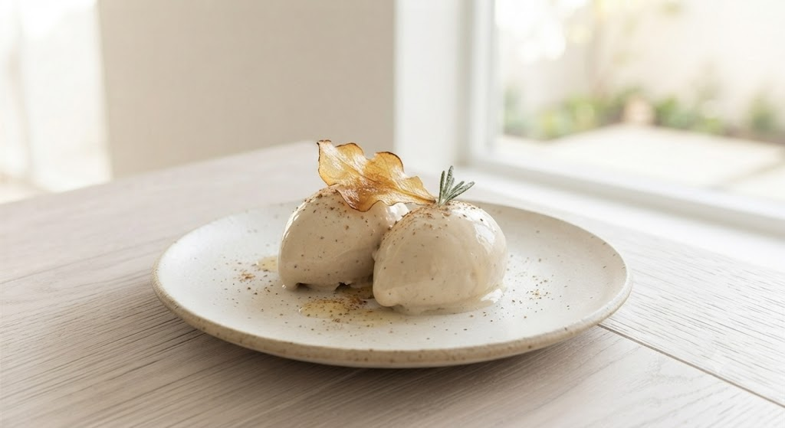

The Specialist
きのこ王子 / 田端 肇
イタリア語で「フンギ」はキノコ。その名の通り、北海道産天然キノコに魅せられた料理人。ソムリエとしての知識も活かし、山での採取から、最適なワインとのペアリングまでをトータルでコーディネートする。札幌の食通たちの間で「予約が取れない隠れ家」として知られる所以は、その飽くなき探求心にある。
札幌・すすきのの静かなる名店
オーナーシェフ「きのこの王子」田端 肇が、
自ら山に入り、選び抜いた一期一会の恵み。
デザートまでキノコが主役の、魔法のようなひとときを。

キノコは脇役ではありません。その土の香り、芳醇な旨味、転じて不思議な食感。北海道産天然キノコが持つポテンシャルを最大限に引き出した時、それは肉や魚を凌駕する「主役」へと変わります。
デザートのポルチーニ・ジェラートを一口含んだ瞬間、あなたのキノコ観は塗り替えられるでしょう。
「期待を大幅に上回る感動で帰りました。」
— 予約サイト クチコミより
フンギ堂での感動的な一夜をより深く心に刻んでいただくため、
新たな特別サービスを準備中です。
本日召し上がった天然キノコの名称、シェフが採取した山々の物語、ソムリエ厳選ペアリングの理由を記した上質なメニューカードをお渡しします。お持ち帰りいただき、ご帰宅後も至福の余韻をお楽しみいただけます。
カード裏面のQRコードからシークレットページへ。めったに手に入らない幻の天然ポルチーニや超稀少キノコが入荷した際、カード保有者様限定で「最優先予約のご案内」を配信いたします。
※ サービス開始時期は店舗および公式Instagramにて順次発表いたします。
イタリア語で「フンギ」はキノコ。その名の通り、北海道産天然キノコに魅せられた料理人。ソムリエとしての知識も活かし、山での採取から、最適なワインとのペアリングまでをトータルでコーディネートする。札幌の食通たちの間で「予約が取れない隠れ家」として知られる所以は、その飽くなき探求心にある。
特別な一夜の、はじまりに。
本ページをご覧になり「おまかせコース」をご予約のお客様に、
ソムリエ厳選ウェルカムドリンクを1杯進呈いたします。
※「LPを見た」と一言添えてご予約ください。
※月曜定休 / 狸小路6丁目 アーケード内